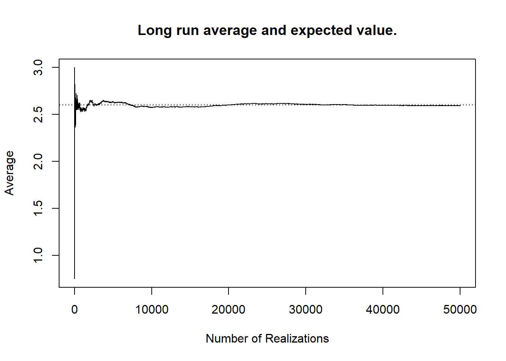

6 The Expected Value and Location Summaries
6.1 Summarizing the Location of a Distribution
Until this point in our discussions of probability we have relied upon characterizing the behaviour of a random variable via the use of probability mass functions. In some sense, a probability mass function captures all of the probabilistic behaviour of a discrete random variable. Using the mass function you are able to characterize how often, in the long run, any particular value will be observed, and answer any questions associated with this. As a result, the mass function remains a critical area of focus for understanding how random quantities behave.
However, these functions need to be explored and manipulated in order for useful information to be extracted from them. They do not summarize this behaviour effectively, as they are not intended to be a summary tool. We may wish to have numeric quantities which are able to concisely express the behaviour of a distribution. Put differently, provided with a probability mass function it is hard to immediately answer “what do we expect to happen with this random variable?” despite the fact that this is a very obvious first question.
To address questions related to our expectations, we turn towards the statistical concept of central tendency or location.
Definition 6.1 (Location (Central Tendency)) The location of a distribution is a measure of a typical value, or a central value, for that distribution. A measure of location may also be referred to as a measure of central tendency.
With measures of location we are trying to capture, with one single number, what value is expected when we make observations from the random quantity. There are many ways one might think to describe our expectations, and it is worth exploring these concepts in some detail. In particular, we want to explore how we might think to define the expected value of a distribution.1
6.2 Deriving the Expected Value
6.2.1 The Mode
One way that we may think to define our expected value is by asking what value is the most probable. This is a question which can be directly answered using the probability mass function. The process for this requires looking at the function and determining which value for \(x\) corresponds to the highest probability. This is the value that we are most likely to see. Sometimes this procedure is fairly straightforward, sometimes it is quite complicated. Regardless of the complexity of the specific scenario, the most probable value has a straightforward interpretation. As intuitive as this may seem, this is not the value that will be used as the expected value generally. Instead, this quantity is referred to as the mode.
Definition 6.2 (Mode) The mode of a distribution is the most probable value of that distribution. Specifically, if \(X\) is a discrete random variable with mass function \(p_X(x)\), then the mode is the value of \(x\) such that \(p_X(x)\) is maximized.
Example 6.1 (Charles and Sadie Investigate Cupcake Sprinkles) Charles and Sadie have noticed that their favourite coffee shop has been experiencing less foot traffic ever since Probability Patisserie: Cupcake Conundrums has opened up next door.2 This cupcake shop has been attracting many of the regular customers, though, Charles and Sadie think that it has more to do with fancy marketing than with a better product. To this end, they go into the store and workout the probability mass function for \(X\), the number of sprinkles on top of the cupcakes. They find the following \[p_X(x) = \begin{cases} 0.25 & x = 0 \\ 0.3 & x = 1 \\ 0.1 & x = 2 \\ 0.05 & x \in \{3,4,5,6,7,8,9\} \\ 0 & \text{otherwise}.\end{cases}\]
What is the mode for the number of sprinkles on the cupcakes?
While the mode is a useful quantity, and for some decisions will be the most relevant summary value, there are some major issues with it as a general measure of location. For starters, consider that our most common probability model considered until this point has been that of equally likely outcomes. Here, there is no well-defined mode.3 While the case of equally likely outcomes is a fairly strong example highlighting the issues with the mode, it need not be so dramatic to undermine its utility. It is possible for a distribution to have several modes which are quite distinct from one another, even if it’s not all values in the support.
Moreover, it is quite common for the modal value to be not particularly likely itself. Consider a random variable that can take on a million different values. If all of the probabilities are approximately \(0.000001\) then presenting the mode as the most probable value does not translate to saying that the mode is particularly probable.
Example 6.2 (Charles and Sadie Investigate Cupcake Happiness) After realizing that the cupcake shop did not provide very many sprinkles, Charles and Sadie decided to turn to the marketing material. In it, Cupcake Conundrums claims that, on a scale from \(0\) to \(100,000\) happiness points, most of their customers experience the maximum happiness after eating their cupcakes. Charles and Sadie are well aware of the ways in which these types of reports can be misleading, and so they investigate, finding the following probability mass function for the number of happiness points. \[p_X(x) = \begin{cases} \frac{x}{5,000,050,000} & x \in \{1,\dots,100 000\} \\ 0 & \text{otherwise}. \end{cases}\]
- Is the mode reported by the company correct?
- Is the mode an accurate depiction of the distribution in this setting?
6.2.2 The Median
If the mode has these shortcomings, what else might work? Another intuitive concept is to try to select the “middle” of the distribution. One way to define the middle would be to select the value such that, in the long run, half of observations from the distribution are beneath it and half are above it. That way, when you are told this value, you immediately know that it is equally likely to observe values on either side of this mark. This is also a particularly intuitive definition for expected value, and is important enough to be named, the median.
Definition 6.3 (Median) The median of a distribution is the value \(m\) which attempts to have \(P(X \leq m) = 0.5\) and \(P(X \geq m) = 0.5\). This value may not always exist, and so formally for discrete random variables, the median \(m\) is any value such that \(P(X \leq m) \geq 0.5\) and \(P(X \geq m) \geq 0.5\).
The median is the midpoint of a distribution and is very important for describing the behaviour of random variables. Medians are often the most helpful single value to report to indicate the typical behaviour of a distribution, and they are frequently used. When people interpret averages it is often the median that they are actually interpreting. It is very intuitive to be given a value and know that half of all realizations are above that point, and half of all realizations are below that point.
Example 6.3 (Charles and Sadie Investigate Cupcake Sprinkles (Again)) After seeing how the cupcake shop used the mode to misrepresent the happiness of its customers, Charles and Sadie worry that they may have been unfair with using the mode. As a result, they turn back to the cupcake sprinkle distribution and try to summarize it differently. Recall that the probability mass function for \(X\), the number of sprinkles on top of the cupcakes, is \[p_X(x) = \begin{cases} 0.25 & x = 0 \\ 0.3 & x = 1 \\ 0.1 & x = 2 \\ 0.05 & x \in \{3,4,5,6,7,8,9\} \\ 0 & \text{otherwise}.\end{cases}\]
What is the median number of sprinkles on the cupcakes?
Despite the advantages of medians, they have their own drawbacks. For starters, the median can be exceptionally challenging to compute in certain settings. As a result, even when a median is appropriate, it may not be desirable if it is too challenging to determine.
Beyond the difficulties in computation, medians have a feature which is simultaneously a major benefit and a major drawback. Specifically, medians are less influenced by extreme values in the probability distribution. Consider two different distributions. The first is equally likely to take any value between \(1\) and \(10\). The second is equally likely to take any value between \(1\) and \(9\) or \(1,000,000\). In both of these settings, the median is \(5\) since \(P(X\leq 5) = 0.5\) and \(P(X \geq 5) = 0.5\). However, in the second setting we may observe a value as high as \(1,000,000\). Moreover, this value will be observed as often as the median will be.
The median, in some sense, ignores the extreme value in the probability distribution. In certain settings, this can be very desirable.4 Consider the distribution of household incomes. There are a few households that earn an incredibly large amount, compared to the remaining households. If you are interested in understanding the “average household”, the median may be a more appropriate measure, as those households with extreme incomes would otherwise distort the picture provided by most families. In this sense, the median’s robustness to extreme values is a positive feature of it in terms of a summary measure for distributional behaviour.
Suppose instead that you work for an insurance company and are concerned with understanding the value of insurance claims that your company will need to pay out. The distribution will look quite similar to the income distribution. Most of the probability will be assigned to fairly small claims, with a small chance of a very large one. As an insurance company, if you use the median this large claim behaviour will be smoothed over, perhaps leaving you unprepared for the possibility of extremely large payouts. In this setting, the extreme values are informative and important, and as a result the median’s robustness becomes a hindrance to correctly describing the important behaviour.5
Example 6.4 (Charles and Sadie Investigate Cupcake Public Relations) Charles and Sadie feel as though they may be finally catching a break when word gets around that the cupcake shop was using spoiled ingredients, making the patrons sick! The cupcake shop, in hearing this, sent their massive public relations team into damage control mode. They claimed that the median number of illnesses per week associated with the cupcake store was the same as most local food services businesses. Doing some digging, Charles and Sadie find the following two probability mass functions, for \(X\) and \(Y\), where \(X\) is the number of weekly illnesses at the cupcake shop, and \(Y\) is the number from a local business that has been around for a while. \[\begin{align*} p_X(x) &= \begin{cases} 0.1 & x = 0 \\ 0.1 & x = 1 \\ 0.35 & x = 2 \\ 0.05 & x = 3 \\ 0.4 & x = 25 \\ 0 & \text{otherwise}; \end{cases} \\ p_Y(y) &= \begin{cases} 0.45 & x = 0 \\ 0.04 & x = 1 \\ 0.5 & x = 2 \\ 0.01 & x = 3 \end{cases}. \end{align*}\]
- What is the median of \(X\)?
- What is the median of \(Y\)?
- Is the claim made by the public relations team an accurate depiction of the world? Why or why not?
Between the median and the mode we have two measures which capture some sense of expected value, each with their own set of strengths and drawbacks. Neither capture what it is that is referred to as the expected value. For this, we need to take inspiration from the median, and consider another way that we may think to find the center of the distribution.
6.2.3 The Mean
If the median gives the middle reading along the values sequentially, we may also wish to think about trying to find the center of gravity of the numbers. Suppose you take a pen, or marker, or small box of chocolates, and you wish to balance this object on a finger or an arm. To do so, you do not place the item so that half of its length sits on one side of the appendage and half on the other. You adjust the location so that half of the mass sits on either side of the appendage.
Throughout our discussion of discrete random variables we have referred to probability as mass. We use the probability mass function to generate our probability values. This metaphor can be extended when we try to find the center of the distribution. If we imagine placing a mass with weight equal to the probability mass at each value that a random variable can take on, we may ask, “where would we have to place a fulcrum to have this number line be balanced?” The answer to this question serves as another possible measure of center. It turns out that this notion of center is the one that we are all most familiar with, the simple average, or mean.
Definition 6.4 (Mean) The mean of a distribution is the center of mass of the distribution. For a random variable, \(X\) with support \(\mathcal{X}\), and probability mass function \(p_X(x)\), the mean of \(X\) is given by \[\sum_{x \in \mathcal{X}} xp_X(x).\]
It is this measure of location which ends up being called the expected value in statistics. We will use average, expected value, mean, and expectation interchangeably. In terms of notation, the expected value of a random variable \(X\) is denoted \(E[X]\). Mathematically, the expected value is desirable for many reasons, some of which we will study in more depth later on. One of these desirable features, which stands in contrast with the median, is the comparative ease with which expected values can be computed. The summation for the expected value is easy to write down, and typically can be solved (either analytically, or readily with a computer).
Example 6.5 (Charles and Sadie Investigate Cupcake Sprinkles (One Last Time)) While the median and mode number of sprinkles on the cupcakes were the same, Charles and Sadie realize that this does not end up connecting well with the total number of sprinkles given out. Perhaps customers like the possibility of getting a large number of sprinkles, if they get lucky. As a result, they decide to round out the summary of the distribution by considering the mean number of sprinkles as well. Recall that the probability mass function for \(X\), the number of sprinkles on top of the cupcakes, is \[p_X(x) = \begin{cases} 0.25 & x = 0 \\ 0.3 & x = 1 \\ 0.1 & x = 2 \\ 0.05 & x \in \{3,4,5,6,7,8,9\} \\ 0 & \text{otherwise}.\end{cases}\]
What is the mean number of sprinkles?
In the case of an equally likely probability model, the expected value becomes the standard average that is widely used. Suppose that there are \(n\) options in the support with \(\mathcal{X} = \{x_1,\dots,x_n\}\). We can write \[E[X] = \sum_{i=1}^n x_i\frac{1}{n} = \frac{1}{n}\sum_{i=1}^nx_i.\] This is the formula for the average that is most commonly applied. When the probability models are more complex, the formula is not precisely the standard average – instead, it becomes a weighted average, where the weights are the probabilities.6 The frequency with which expected values are used make them attractive as a quick summary for the center of a distribution.
6.2.4 How is the Mean “Expected”?
While the mean provides a useful, intuitive measure of center of the distribution, it is perhaps counterintuitive to name it the “expected value.” To understand the naming convention it is easiest to consider the application which has likely spurred more development of statistics and probability than any other: gambling.
Suppose that there is some game of chance that can pay out different amounts with different probabilities. A critical question for a gambler in deciding whether or not to play such a game is “how much can I expect to earn, if I play?” This is crucial to understanding, for instance, how much you should be willing to pay to participate, or if you are the one running the game, how much you should charge to ensure that you make a profit.
If you want to understand what you expect to earn, the intuitive way of accomplishing this is to weight each possible outcome by how likely it is to occur. This is exactly the expected value formula that has been provided, and so the expected value can be thought of as the expected payout of a game of chance where the outcomes are payouts corresponding to each probability.
To interpret the expected value of a random variable, one possibility is using the intuition that we used to derive the result. Notably, the expected value is the center of mass of the distribution, where the masses correspond to probabilities. This means that it is not necessarily an actual central number over the range, but rather that it sits in the weighted middle. While this interpretation is useful in many situations, there are times where the point of balance is a less intuitive description. For these, it can sometimes be useful to frame the expected value as the long term simple average from the distribution.
If we imagine observing many independent and identically distributed random variables, then as the number of samples tends to infinity, the expected value of \(X\) and the simple average will begin to coincide with one another. That is the distance between \(E[X]\) and \(\frac{1}{n}\sum_{i=1}^n X_i\) will shrink to \(0\). As a result, we can view the expected value as the average over repeated experiments. This interpretation coincides nicely with the description based on games of chance. Specifically, if you were to repeatedly play the same game of chance, the average payout per game will be equal to the expected value, if you play for long enough.
6.3 Which Measure of Central Tendency Should be Used?
Where the median demonstrated robustness against extreme values in the distribution, the mean does not. For instance, if we consider the distribution of incomes across a particular region, the mean will be much higher than the median, since those families with exceptionally high incomes will not be smoothed over as they were with medians. In this case, the lack of robustness for the expected value will render the mean a less representative summary for the true behaviour of the random quantity.
To see this concretely consider a random variable which with equal probability takes a value between \(1\) and \(9\). This will have \(E[X] = 5\). Now, if the \(9\) is made to be \(1,000,000\), the expected value will now be \(E[X] = 111115.\dot1\). This is a far cry from the median which does not change from \(5\) in either case. This lack of robustness is desirable in the event of the insurance example from the median discussion, but will be less desirable in other settings.
The mean, median, and mode are the three standard measures of central tendency. They are single values which describe the standard behaviour of a random quantity. Each of the three has merits as a measure, and each has drawbacks for certain settings. The question of which to use and when depends primarily on the question of interest under consideration, rather than on features of the data alone.7 Often, presenting more than one measure can give a better sense of the distributional behaviour that any one individual will.
Example 6.6 (Charles and Sadie Reflect on the Cupcake Adventures) Charles and Sadie decide it is worth stepping back and summarizing all that has happened with regards to their cupcake adventures, trying to ensure that distributions are always summarized fairly.
- For the number of sprinkles per cupcake is the mean, median, or mode the best measure of central tendency?
- For the amount happiness in customers, is the mean, median, or mode the best measure of central tendency?
- For the number of customers who become ill eating at establishments, is the mean, median, or mode the best measure of central tendency?
Despite the utility of all three measures, the expected value holds a place of more central importance in probability and statistics. A lot of this has to do with further mathematical properties of the mean. Because of its central role, it is worth studying the expected value in some more depth.
6.4 Expected Values of Functions of Random Variables
Sometimes the value of a random variable needs to be mapped through a function to give the value which is most relevant to us. Consider, for instance, a situation wherein the side lengths of boxes being manufactured by a specific supplier are random, due to incorrectly calibrated tolerances in the machines. The resulting boxes are perfect cubes. Suppose we are interested in the volume of the produced box not the side length. If a box has side length \(x\), then its volume will be \(x^3\), and so we may desire some way of computing \(E[X^3]\) rather than \(E[X]\).
Generally, for a function \(g(X)\), we may want to compute \(E[g(X)]\). It is important to recognize that \(E[g(X)] \neq g(E[X])\). This is a common mistake.8 If we are unable to apply the function to the expected value, then the question of how to compute the expected value remains. Instead of applying the function to overall expected value, instead, we apply the function to each value in the defining relationship for the expected value. That is, \[E[g(X)] = \sum_{x\in\mathcal{X}} g(x)p_X(x).\] This is sometimes referred to as the “law of the unconscious statistician,” a name which may be aggressive enough to help remember the correct way to compute the expectation.9
Example 6.7 (The Happiness Scale Inversion) Charles and Sadie have made really great strides working to protect their favourite coffee shop from the new cupcake store. One day when digging through the material more, they realize that the happiness report produced by the company is even less accurate than they had originally reported! The company reported the following probability mass function for happiness points \[p_X(x) = \begin{cases} \frac{x}{5,000,050,000} & x \in \{1,\dots,100 000\} \\ 0 & \text{otherwise}. \end{cases}\] Charles and Sadie track down the source of this expression and they find that, in fact, this does not measure happiness points at all. Instead, the number of happiness points is a function of \(X\), specifically, \(Z = 1/X\).
- What is the expected value of \(X\)? Note, it may be helpful to recall that \(\sum_{x=1}^{k} x^2 = \frac{k(k+1)(2k+1)}{6}\).
- What is the expected value of \(Z\)?
These functions applied to random variables are often thought of as “transformations” of the random quantities. For instance, we transformed a side length into a volume. While the law of the unconscious statistician will apply to any transformation for a random variable, we can sometimes use shortcuts to circumvent its application. In particular, when \(g(X) = aX + b\), for constant numbers \(a\) and \(b\), we can greatly simplify the expected value of the transformation. To see this note \[\begin{align*} E[aX + b] &= \sum_{x\in\mathcal{X}}(ax + b)p_X(x) \\ &= \sum_{x\in\mathcal{X}}axp_X(x) + bp_X(x) \\ &= a\sum_{x\in\mathcal{X}}xp_X(x) + b\sum_{x\in\mathcal{X}}p_X(X) \\ &= aE[X] + b. \end{align*}\] That is, in general, we have that \(E[aX + b] = aE[X] + b\).
This is particularly useful as linear transformations like \(aX+b\) arise very commonly. For instance, most unit conversions are simple linear combinations. If a random quantity is measured in one unit then this result can be used to quickly convert expectations to another.
Example 6.8 (Sadie’s Trip to America) Sadie has recently returned from a long trip to America. The trip was long enough that temperatures measured in Fahrenheit started to make sense. When Sadie and Charles begin to talk about the weather, Charles brings up the temperature distribution of a possible summer vacation spot. Unfortunately for Sadie, these temperatures are all in Celsius. The distribution Charles provides is \[p_X(x) = \begin{cases} 0.1 & x \in \{10, 11, 12, 13, 14\} \\ 0.05 & x \in \{15, 16, 17, 18, 19, 20, 21, 22, 23, 24\} \\ 0 & \text{otherwise} \end{cases}\]
- What is the expected temperature, in Celsius?
- Supposing that the temperature in Fahrenheit is given by \(Y = 1.8X + 32\), what is the expected temperature in Fahrenheit?
This type of linear transformation also frequently comes up with games of chance and payouts, or with scoring more generally.10
Measures of central tendency are important to summarize the behaviour of a random quantity. Whether using the mean, median, or mode, these measures of location describe, on average, what to expect from observations of the random quantity. However, understanding a distribution requires understanding far more than simply the measures of location. As was discussed previously, the probability mass function captures the complete probabilistic behaviour of a discrete random variable, it is only intuitive that some information would be lost with a single numeric summary.
As a general rule when learning it is often helpful to consider exercises of discovery. That is, try to determine why particular definitions are the way that they are, or where they have from.↩︎
You should picture the owner of this fictitious cupcake store as a giant, multinational, faceless corporation. A corporation that seems to take pleasure in stepping on the local businesses. That way, as Charles and Sadie try to fight back, we can remain on their side!↩︎
When multiple modes exist, convention tends to report the set of all of the modes. In the equally likely outcome model, this is the entire support for the random variable, and as a result, the mode is exactly the probability mass function. There is no summary provided.↩︎
You will find many introductory sources that say that you should always use the median when you are concerned with extreme values. This is a great oversimplification of the truth, and points to a general rule in Statistics: there are very few general rules. The guidance comes from the fact that often extreme values skew our perceptions of the underlying truth. While this may be true in general, it is not true often enough to warrant being given as universal guidance.↩︎
An insurance company ignoring these massive claims would almost certainly go out of business very, very quickly.↩︎
While less commonly applied than the simple average, a weighted average is familiar to most students for a crucial purpose: grade calculations. If you view the weight of each item in a course as a probability mass, and the grade you scored as the value, then your final grade in the course is exactly the expected value of this distribution.↩︎
The data is one consideration for which measure to use, but not the only one (and not the most important one).↩︎
and an attractive one, but a mistake nonetheless.↩︎
Some statisticians dislike this name. I find it to be rather cute.↩︎
For instance, suppose you are betting a certain amount on the results of a coin toss, or that you are taking a multiple choice test that gives \(2\) points for a correct answer.↩︎
Try working this out!↩︎